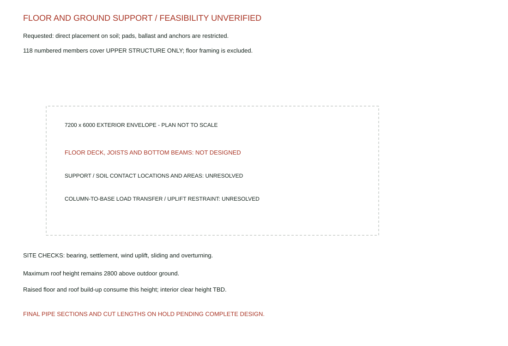
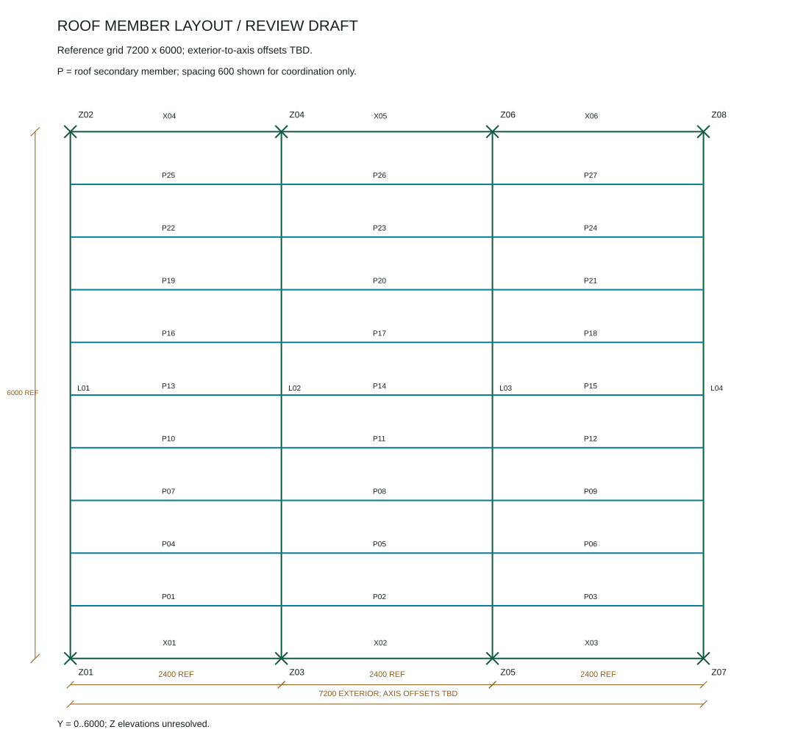
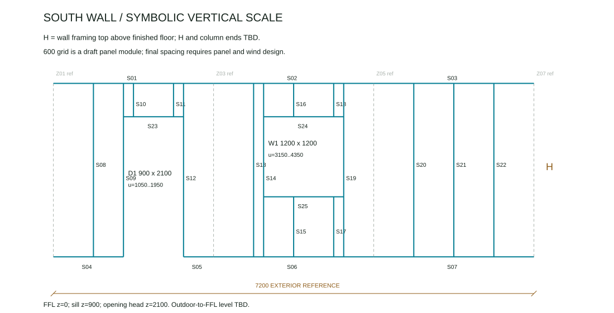
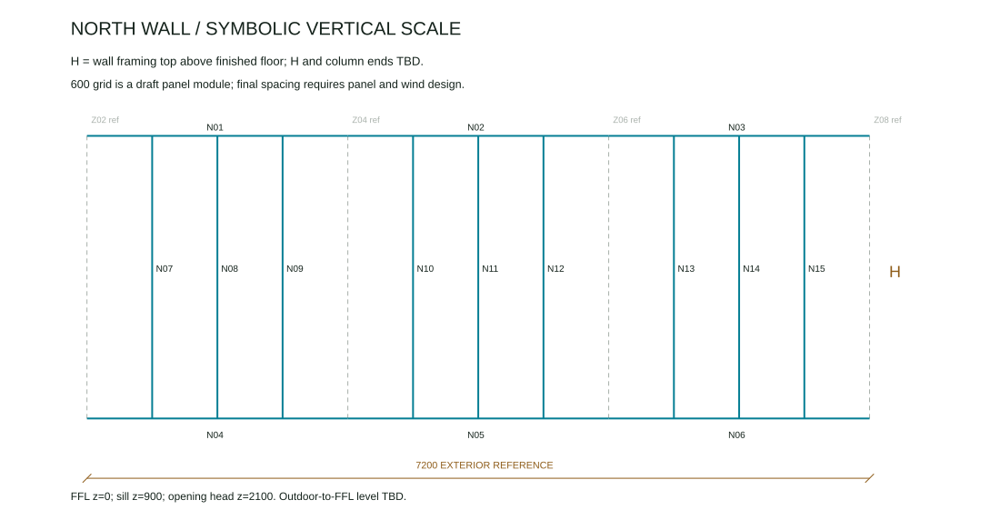
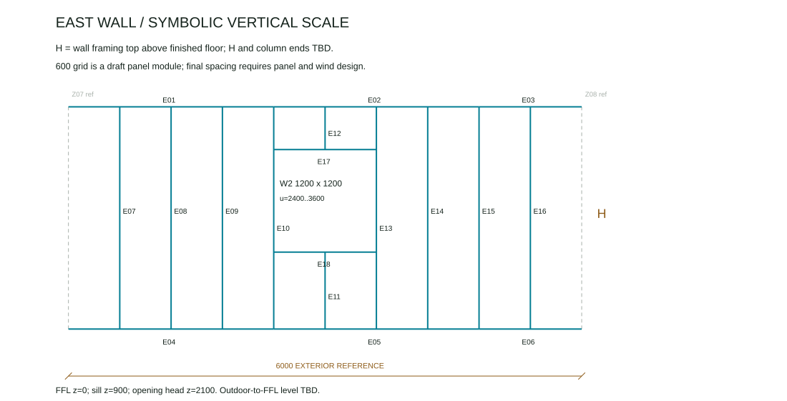
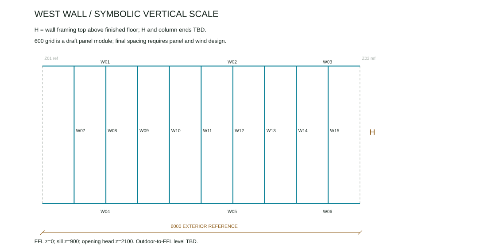

底架与土面支承：待现场可行性确认

7.2 × 6 米居住小屋，外高 2.8 米。按主体框架、屋面檩条和四面墙展开编号，上部图纸与清单逐根对应；底架与地板方案待定。
四道横向框架、八个柱位；门窗沿用一门两窗的示例位置。墙面和屋面暂以岩棉夹芯板为候选，板厚与自重待定。
2.8 米：室外地面至屋顶最高处。底架、地板、梁及屋面均占用这段高度，室内净高待核算。
已画出的上部构件列出编号、位置、几何参考尺寸与材料候选。底部钢梁、地板龙骨、地板及支承需在现场可行性确认后设计。
本版省略屋面排水详图；屋面构造与积水荷载留在正式设计中处理。
点击图纸打开大图。图中英文编号与下方中文清单对应；DXF 使用毫米单位。
外轮廓与结构轴线的偏移尚待墙体、柱截面确定；图上的 2,400 / 6,000 等为布置参考值。H 表示墙架顶部相对室内完成地面的待定高度。门窗高度以室内完成地面为基准，室内外高差待定。






材料栏为备选钢材牌号。截面栏需要填写外边尺寸和壁厚，才能形成采购规格。
| 编号 | 构件 | 部位 | 位置 | 参考尺寸 / mm | 截面型号、壁厚 | 候选材质 | 下料长度 |
|---|---|---|---|---|---|---|---|
| Z01 | 柱 | 主体 | X=0, Y=0; 柱底、柱顶标高待定 | Column height TBD (屋面 max 2800 is not column length) | 待结构设计核定（截面及壁厚） | Q355B （候选） | 待截面和节点设计后确定 |
| Z02 | 柱 | 主体 | X=0, Y=6000; 柱底、柱顶标高待定 | Column height TBD (屋面 max 2800 is not column length) | 待结构设计核定（截面及壁厚） | Q355B （候选） | 待截面和节点设计后确定 |
| L01 | 屋面主梁 | 屋面 | X=0; Y=0..6000 | 6000 参考跨度；轴线偏移待定 | 待结构设计核定（截面及壁厚） | Q355B （候选） | 待截面和节点设计后确定 |
| Z03 | 柱 | 主体 | X=2400, Y=0; 柱底、柱顶标高待定 | Column height TBD (屋面 max 2800 is not column length) | 待结构设计核定（截面及壁厚） | Q355B （候选） | 待截面和节点设计后确定 |
| Z04 | 柱 | 主体 | X=2400, Y=6000; 柱底、柱顶标高待定 | Column height TBD (屋面 max 2800 is not column length) | 待结构设计核定（截面及壁厚） | Q355B （候选） | 待截面和节点设计后确定 |
| L02 | 屋面主梁 | 屋面 | X=2400; Y=0..6000 | 6000 参考跨度；轴线偏移待定 | 待结构设计核定（截面及壁厚） | Q355B （候选） | 待截面和节点设计后确定 |
| Z05 | 柱 | 主体 | X=4800, Y=0; 柱底、柱顶标高待定 | Column height TBD (屋面 max 2800 is not column length) | 待结构设计核定（截面及壁厚） | Q355B （候选） | 待截面和节点设计后确定 |
| Z06 | 柱 | 主体 | X=4800, Y=6000; 柱底、柱顶标高待定 | Column height TBD (屋面 max 2800 is not column length) | 待结构设计核定（截面及壁厚） | Q355B （候选） | 待截面和节点设计后确定 |
| L03 | 屋面主梁 | 屋面 | X=4800; Y=0..6000 | 6000 参考跨度；轴线偏移待定 | 待结构设计核定（截面及壁厚） | Q355B （候选） | 待截面和节点设计后确定 |
| Z07 | 柱 | 主体 | X=7200, Y=0; 柱底、柱顶标高待定 | Column height TBD (屋面 max 2800 is not column length) | 待结构设计核定（截面及壁厚） | Q355B （候选） | 待截面和节点设计后确定 |
| Z08 | 柱 | 主体 | X=7200, Y=6000; 柱底、柱顶标高待定 | Column height TBD (屋面 max 2800 is not column length) | 待结构设计核定（截面及壁厚） | Q355B （候选） | 待截面和节点设计后确定 |
| L04 | 屋面主梁 | 屋面 | X=7200; Y=0..6000 | 6000 参考跨度；轴线偏移待定 | 待结构设计核定（截面及壁厚） | Q355B （候选） | 待截面和节点设计后确定 |
| X01 | 纵向连系梁 | 屋面 | Y=0; X=0..2400 | 2400 参考跨度；轴线偏移待定 | 待结构设计核定（截面及壁厚） | Q355B （候选） | 待截面和节点设计后确定 |
| X02 | 纵向连系梁 | 屋面 | Y=0; X=2400..4800 | 2400 参考跨度；轴线偏移待定 | 待结构设计核定（截面及壁厚） | Q355B （候选） | 待截面和节点设计后确定 |
| X03 | 纵向连系梁 | 屋面 | Y=0; X=4800..7200 | 2400 参考跨度；轴线偏移待定 | 待结构设计核定（截面及壁厚） | Q355B （候选） | 待截面和节点设计后确定 |
| X04 | 纵向连系梁 | 屋面 | Y=6000; X=0..2400 | 2400 参考跨度；轴线偏移待定 | 待结构设计核定（截面及壁厚） | Q355B （候选） | 待截面和节点设计后确定 |
| X05 | 纵向连系梁 | 屋面 | Y=6000; X=2400..4800 | 2400 参考跨度；轴线偏移待定 | 待结构设计核定（截面及壁厚） | Q355B （候选） | 待截面和节点设计后确定 |
| X06 | 纵向连系梁 | 屋面 | Y=6000; X=4800..7200 | 2400 参考跨度；轴线偏移待定 | 待结构设计核定（截面及壁厚） | Q355B （候选） | 待截面和节点设计后确定 |
| P01 | 屋面次构件 | 屋面 | Y=600; X=0..2400; 屋面 elevation TBD | 2400 参考跨度；轴线偏移待定 | 待结构设计核定（截面及壁厚） | Q235B / Q355B （候选） | 待截面和节点设计后确定 |
| P02 | 屋面次构件 | 屋面 | Y=600; X=2400..4800; 屋面 elevation TBD | 2400 参考跨度；轴线偏移待定 | 待结构设计核定（截面及壁厚） | Q235B / Q355B （候选） | 待截面和节点设计后确定 |
| P03 | 屋面次构件 | 屋面 | Y=600; X=4800..7200; 屋面 elevation TBD | 2400 参考跨度；轴线偏移待定 | 待结构设计核定（截面及壁厚） | Q235B / Q355B （候选） | 待截面和节点设计后确定 |
| P04 | 屋面次构件 | 屋面 | Y=1200; X=0..2400; 屋面 elevation TBD | 2400 参考跨度；轴线偏移待定 | 待结构设计核定（截面及壁厚） | Q235B / Q355B （候选） | 待截面和节点设计后确定 |
| P05 | 屋面次构件 | 屋面 | Y=1200; X=2400..4800; 屋面 elevation TBD | 2400 参考跨度；轴线偏移待定 | 待结构设计核定（截面及壁厚） | Q235B / Q355B （候选） | 待截面和节点设计后确定 |
| P06 | 屋面次构件 | 屋面 | Y=1200; X=4800..7200; 屋面 elevation TBD | 2400 参考跨度；轴线偏移待定 | 待结构设计核定（截面及壁厚） | Q235B / Q355B （候选） | 待截面和节点设计后确定 |
| P07 | 屋面次构件 | 屋面 | Y=1800; X=0..2400; 屋面 elevation TBD | 2400 参考跨度；轴线偏移待定 | 待结构设计核定（截面及壁厚） | Q235B / Q355B （候选） | 待截面和节点设计后确定 |
| P08 | 屋面次构件 | 屋面 | Y=1800; X=2400..4800; 屋面 elevation TBD | 2400 参考跨度；轴线偏移待定 | 待结构设计核定（截面及壁厚） | Q235B / Q355B （候选） | 待截面和节点设计后确定 |
| P09 | 屋面次构件 | 屋面 | Y=1800; X=4800..7200; 屋面 elevation TBD | 2400 参考跨度；轴线偏移待定 | 待结构设计核定（截面及壁厚） | Q235B / Q355B （候选） | 待截面和节点设计后确定 |
| P10 | 屋面次构件 | 屋面 | Y=2400; X=0..2400; 屋面 elevation TBD | 2400 参考跨度；轴线偏移待定 | 待结构设计核定（截面及壁厚） | Q235B / Q355B （候选） | 待截面和节点设计后确定 |
| P11 | 屋面次构件 | 屋面 | Y=2400; X=2400..4800; 屋面 elevation TBD | 2400 参考跨度；轴线偏移待定 | 待结构设计核定（截面及壁厚） | Q235B / Q355B （候选） | 待截面和节点设计后确定 |
| P12 | 屋面次构件 | 屋面 | Y=2400; X=4800..7200; 屋面 elevation TBD | 2400 参考跨度；轴线偏移待定 | 待结构设计核定（截面及壁厚） | Q235B / Q355B （候选） | 待截面和节点设计后确定 |
| P13 | 屋面次构件 | 屋面 | Y=3000; X=0..2400; 屋面 elevation TBD | 2400 参考跨度；轴线偏移待定 | 待结构设计核定（截面及壁厚） | Q235B / Q355B （候选） | 待截面和节点设计后确定 |
| P14 | 屋面次构件 | 屋面 | Y=3000; X=2400..4800; 屋面 elevation TBD | 2400 参考跨度；轴线偏移待定 | 待结构设计核定（截面及壁厚） | Q235B / Q355B （候选） | 待截面和节点设计后确定 |
| P15 | 屋面次构件 | 屋面 | Y=3000; X=4800..7200; 屋面 elevation TBD | 2400 参考跨度；轴线偏移待定 | 待结构设计核定（截面及壁厚） | Q235B / Q355B （候选） | 待截面和节点设计后确定 |
| P16 | 屋面次构件 | 屋面 | Y=3600; X=0..2400; 屋面 elevation TBD | 2400 参考跨度；轴线偏移待定 | 待结构设计核定（截面及壁厚） | Q235B / Q355B （候选） | 待截面和节点设计后确定 |
| P17 | 屋面次构件 | 屋面 | Y=3600; X=2400..4800; 屋面 elevation TBD | 2400 参考跨度；轴线偏移待定 | 待结构设计核定（截面及壁厚） | Q235B / Q355B （候选） | 待截面和节点设计后确定 |
| P18 | 屋面次构件 | 屋面 | Y=3600; X=4800..7200; 屋面 elevation TBD | 2400 参考跨度；轴线偏移待定 | 待结构设计核定（截面及壁厚） | Q235B / Q355B （候选） | 待截面和节点设计后确定 |
| P19 | 屋面次构件 | 屋面 | Y=4200; X=0..2400; 屋面 elevation TBD | 2400 参考跨度；轴线偏移待定 | 待结构设计核定（截面及壁厚） | Q235B / Q355B （候选） | 待截面和节点设计后确定 |
| P20 | 屋面次构件 | 屋面 | Y=4200; X=2400..4800; 屋面 elevation TBD | 2400 参考跨度；轴线偏移待定 | 待结构设计核定（截面及壁厚） | Q235B / Q355B （候选） | 待截面和节点设计后确定 |
| P21 | 屋面次构件 | 屋面 | Y=4200; X=4800..7200; 屋面 elevation TBD | 2400 参考跨度；轴线偏移待定 | 待结构设计核定（截面及壁厚） | Q235B / Q355B （候选） | 待截面和节点设计后确定 |
| P22 | 屋面次构件 | 屋面 | Y=4800; X=0..2400; 屋面 elevation TBD | 2400 参考跨度；轴线偏移待定 | 待结构设计核定（截面及壁厚） | Q235B / Q355B （候选） | 待截面和节点设计后确定 |
| P23 | 屋面次构件 | 屋面 | Y=4800; X=2400..4800; 屋面 elevation TBD | 2400 参考跨度；轴线偏移待定 | 待结构设计核定（截面及壁厚） | Q235B / Q355B （候选） | 待截面和节点设计后确定 |
| P24 | 屋面次构件 | 屋面 | Y=4800; X=4800..7200; 屋面 elevation TBD | 2400 参考跨度；轴线偏移待定 | 待结构设计核定（截面及壁厚） | Q235B / Q355B （候选） | 待截面和节点设计后确定 |
| P25 | 屋面次构件 | 屋面 | Y=5400; X=0..2400; 屋面 elevation TBD | 2400 参考跨度；轴线偏移待定 | 待结构设计核定（截面及壁厚） | Q235B / Q355B （候选） | 待截面和节点设计后确定 |
| P26 | 屋面次构件 | 屋面 | Y=5400; X=2400..4800; 屋面 elevation TBD | 2400 参考跨度；轴线偏移待定 | 待结构设计核定（截面及壁厚） | Q235B / Q355B （候选） | 待截面和节点设计后确定 |
| P27 | 屋面次构件 | 屋面 | Y=5400; X=4800..7200; 屋面 elevation TBD | 2400 参考跨度；轴线偏移待定 | 待结构设计核定（截面及壁厚） | Q235B / Q355B （候选） | 待截面和节点设计后确定 |
| S01 | 墙顶横龙骨 | 南墙 | 南墙: u=0..2400; z=H..H 相对室内完成地面；参考几何 | 2400 参考跨度；节点扣减待定 | 待结构设计核定（截面及壁厚） | Q235B / Q355B （候选） | 待截面和节点设计后确定 |
| S02 | 墙顶横龙骨 | 南墙 | 南墙: u=2400..4800; z=H..H 相对室内完成地面；参考几何 | 2400 参考跨度；节点扣减待定 | 待结构设计核定（截面及壁厚） | Q235B / Q355B （候选） | 待截面和节点设计后确定 |
| S03 | 墙顶横龙骨 | 南墙 | 南墙: u=4800..7200; z=H..H 相对室内完成地面；参考几何 | 2400 参考跨度；节点扣减待定 | 待结构设计核定（截面及壁厚） | Q235B / Q355B （候选） | 待截面和节点设计后确定 |
| S04 | 墙底横龙骨 | 南墙 | 南墙: u=0..1050; z=0..0 相对室内完成地面；参考几何 | 1050 参考跨度；节点扣减待定 | 待结构设计核定（截面及壁厚） | Q235B / Q355B （候选） | 待截面和节点设计后确定 |
| S05 | 墙底横龙骨 | 南墙 | 南墙: u=1950..2400; z=0..0 相对室内完成地面；参考几何 | 450 参考跨度；节点扣减待定 | 待结构设计核定（截面及壁厚） | Q235B / Q355B （候选） | 待截面和节点设计后确定 |
| S06 | 墙底横龙骨 | 南墙 | 南墙: u=2400..4800; z=0..0 相对室内完成地面；参考几何 | 2400 参考跨度；节点扣减待定 | 待结构设计核定（截面及壁厚） | Q235B / Q355B （候选） | 待截面和节点设计后确定 |
| S07 | 墙底横龙骨 | 南墙 | 南墙: u=4800..7200; z=0..0 相对室内完成地面；参考几何 | 2400 参考跨度；节点扣减待定 | 待结构设计核定（截面及壁厚） | Q235B / Q355B （候选） | 待截面和节点设计后确定 |
| S08 | 墙竖龙骨 | 南墙 | 南墙: u=600..600; z=0..H 相对室内完成地面；参考几何 | H 参考高度；节点扣减待定 | 待结构设计核定（截面及壁厚） | Q235B / Q355B （候选） | 待截面和节点设计后确定 |
| S09 | 洞口边龙骨 | 南墙 | 南墙: u=1050..1050; z=0..H 相对室内完成地面；参考几何 | H 参考高度；节点扣减待定 | 待结构设计核定（截面及壁厚） | Q235B / Q355B （候选） | 待截面和节点设计后确定 |
| S10 | 洞口上短龙骨 | 南墙 | 南墙: u=1200..1200; z=2100..H 相对室内完成地面；参考几何 | H - 2100; 节点扣减待定 | 待结构设计核定（截面及壁厚） | Q235B / Q355B （候选） | 待截面和节点设计后确定 |
| S11 | 洞口上短龙骨 | 南墙 | 南墙: u=1800..1800; z=2100..H 相对室内完成地面；参考几何 | H - 2100; 节点扣减待定 | 待结构设计核定（截面及壁厚） | Q235B / Q355B （候选） | 待截面和节点设计后确定 |
| S12 | 洞口边龙骨 | 南墙 | 南墙: u=1950..1950; z=0..H 相对室内完成地面；参考几何 | H 参考高度；节点扣减待定 | 待结构设计核定（截面及壁厚） | Q235B / Q355B （候选） | 待截面和节点设计后确定 |
| S13 | 墙竖龙骨 | 南墙 | 南墙: u=3000..3000; z=0..H 相对室内完成地面；参考几何 | H 参考高度；节点扣减待定 | 待结构设计核定（截面及壁厚） | Q235B / Q355B （候选） | 待截面和节点设计后确定 |
| S14 | 洞口边龙骨 | 南墙 | 南墙: u=3150..3150; z=0..H 相对室内完成地面；参考几何 | H 参考高度；节点扣减待定 | 待结构设计核定（截面及壁厚） | Q235B / Q355B （候选） | 待截面和节点设计后确定 |
| S15 | 窗下短龙骨 | 南墙 | 南墙: u=3600..3600; z=0..900 相对室内完成地面；参考几何 | 900 参考高度；节点扣减待定 | 待结构设计核定（截面及壁厚） | Q235B / Q355B （候选） | 待截面和节点设计后确定 |
| S16 | 洞口上短龙骨 | 南墙 | 南墙: u=3600..3600; z=2100..H 相对室内完成地面；参考几何 | H - 2100; 节点扣减待定 | 待结构设计核定（截面及壁厚） | Q235B / Q355B （候选） | 待截面和节点设计后确定 |
| S17 | 窗下短龙骨 | 南墙 | 南墙: u=4200..4200; z=0..900 相对室内完成地面；参考几何 | 900 参考高度；节点扣减待定 | 待结构设计核定（截面及壁厚） | Q235B / Q355B （候选） | 待截面和节点设计后确定 |
| S18 | 洞口上短龙骨 | 南墙 | 南墙: u=4200..4200; z=2100..H 相对室内完成地面；参考几何 | H - 2100; 节点扣减待定 | 待结构设计核定（截面及壁厚） | Q235B / Q355B （候选） | 待截面和节点设计后确定 |
| S19 | 洞口边龙骨 | 南墙 | 南墙: u=4350..4350; z=0..H 相对室内完成地面；参考几何 | H 参考高度；节点扣减待定 | 待结构设计核定（截面及壁厚） | Q235B / Q355B （候选） | 待截面和节点设计后确定 |
| S20 | 墙竖龙骨 | 南墙 | 南墙: u=5400..5400; z=0..H 相对室内完成地面；参考几何 | H 参考高度；节点扣减待定 | 待结构设计核定（截面及壁厚） | Q235B / Q355B （候选） | 待截面和节点设计后确定 |
| S21 | 墙竖龙骨 | 南墙 | 南墙: u=6000..6000; z=0..H 相对室内完成地面；参考几何 | H 参考高度；节点扣减待定 | 待结构设计核定（截面及壁厚） | Q235B / Q355B （候选） | 待截面和节点设计后确定 |
| S22 | 墙竖龙骨 | 南墙 | 南墙: u=6600..6600; z=0..H 相对室内完成地面；参考几何 | H 参考高度；节点扣减待定 | 待结构设计核定（截面及壁厚） | Q235B / Q355B （候选） | 待截面和节点设计后确定 |
| S23 | 洞口过梁 | 南墙 | 南墙: u=1050..1950; z=2100..2100 相对室内完成地面；参考几何 | 900 洞口参考宽度；支承和节点扣减待定 | 待结构设计核定（截面及壁厚） | Q235B / Q355B （候选） | 待截面和节点设计后确定 |
| S24 | 洞口过梁 | 南墙 | 南墙: u=3150..4350; z=2100..2100 相对室内完成地面；参考几何 | 1200 洞口参考宽度；支承和节点扣减待定 | 待结构设计核定（截面及壁厚） | Q235B / Q355B （候选） | 待截面和节点设计后确定 |
| S25 | 窗台横龙骨 | 南墙 | 南墙: u=3150..4350; z=900..900 相对室内完成地面；参考几何 | 1200 洞口参考宽度；节点扣减待定 | 待结构设计核定（截面及壁厚） | Q235B / Q355B （候选） | 待截面和节点设计后确定 |
| N01 | 墙顶横龙骨 | 北墙 | 北墙: u=0..2400; z=H..H 相对室内完成地面；参考几何 | 2400 参考跨度；节点扣减待定 | 待结构设计核定（截面及壁厚） | Q235B / Q355B （候选） | 待截面和节点设计后确定 |
| N02 | 墙顶横龙骨 | 北墙 | 北墙: u=2400..4800; z=H..H 相对室内完成地面；参考几何 | 2400 参考跨度；节点扣减待定 | 待结构设计核定（截面及壁厚） | Q235B / Q355B （候选） | 待截面和节点设计后确定 |
| N03 | 墙顶横龙骨 | 北墙 | 北墙: u=4800..7200; z=H..H 相对室内完成地面；参考几何 | 2400 参考跨度；节点扣减待定 | 待结构设计核定（截面及壁厚） | Q235B / Q355B （候选） | 待截面和节点设计后确定 |
| N04 | 墙底横龙骨 | 北墙 | 北墙: u=0..2400; z=0..0 相对室内完成地面；参考几何 | 2400 参考跨度；节点扣减待定 | 待结构设计核定（截面及壁厚） | Q235B / Q355B （候选） | 待截面和节点设计后确定 |
| N05 | 墙底横龙骨 | 北墙 | 北墙: u=2400..4800; z=0..0 相对室内完成地面；参考几何 | 2400 参考跨度；节点扣减待定 | 待结构设计核定（截面及壁厚） | Q235B / Q355B （候选） | 待截面和节点设计后确定 |
| N06 | 墙底横龙骨 | 北墙 | 北墙: u=4800..7200; z=0..0 相对室内完成地面；参考几何 | 2400 参考跨度；节点扣减待定 | 待结构设计核定（截面及壁厚） | Q235B / Q355B （候选） | 待截面和节点设计后确定 |
| N07 | 墙竖龙骨 | 北墙 | 北墙: u=600..600; z=0..H 相对室内完成地面；参考几何 | H 参考高度；节点扣减待定 | 待结构设计核定（截面及壁厚） | Q235B / Q355B （候选） | 待截面和节点设计后确定 |
| N08 | 墙竖龙骨 | 北墙 | 北墙: u=1200..1200; z=0..H 相对室内完成地面；参考几何 | H 参考高度；节点扣减待定 | 待结构设计核定（截面及壁厚） | Q235B / Q355B （候选） | 待截面和节点设计后确定 |
| N09 | 墙竖龙骨 | 北墙 | 北墙: u=1800..1800; z=0..H 相对室内完成地面；参考几何 | H 参考高度；节点扣减待定 | 待结构设计核定（截面及壁厚） | Q235B / Q355B （候选） | 待截面和节点设计后确定 |
| N10 | 墙竖龙骨 | 北墙 | 北墙: u=3000..3000; z=0..H 相对室内完成地面；参考几何 | H 参考高度；节点扣减待定 | 待结构设计核定（截面及壁厚） | Q235B / Q355B （候选） | 待截面和节点设计后确定 |
| N11 | 墙竖龙骨 | 北墙 | 北墙: u=3600..3600; z=0..H 相对室内完成地面；参考几何 | H 参考高度；节点扣减待定 | 待结构设计核定（截面及壁厚） | Q235B / Q355B （候选） | 待截面和节点设计后确定 |
| N12 | 墙竖龙骨 | 北墙 | 北墙: u=4200..4200; z=0..H 相对室内完成地面；参考几何 | H 参考高度；节点扣减待定 | 待结构设计核定（截面及壁厚） | Q235B / Q355B （候选） | 待截面和节点设计后确定 |
| N13 | 墙竖龙骨 | 北墙 | 北墙: u=5400..5400; z=0..H 相对室内完成地面；参考几何 | H 参考高度；节点扣减待定 | 待结构设计核定（截面及壁厚） | Q235B / Q355B （候选） | 待截面和节点设计后确定 |
| N14 | 墙竖龙骨 | 北墙 | 北墙: u=6000..6000; z=0..H 相对室内完成地面；参考几何 | H 参考高度；节点扣减待定 | 待结构设计核定（截面及壁厚） | Q235B / Q355B （候选） | 待截面和节点设计后确定 |
| N15 | 墙竖龙骨 | 北墙 | 北墙: u=6600..6600; z=0..H 相对室内完成地面；参考几何 | H 参考高度；节点扣减待定 | 待结构设计核定（截面及壁厚） | Q235B / Q355B （候选） | 待截面和节点设计后确定 |
| E01 | 墙顶横龙骨 | 东墙 | 东墙: u=0..2400; z=H..H 相对室内完成地面；参考几何 | 2400 参考跨度；节点扣减待定 | 待结构设计核定（截面及壁厚） | Q235B / Q355B （候选） | 待截面和节点设计后确定 |
| E02 | 墙顶横龙骨 | 东墙 | 东墙: u=2400..4800; z=H..H 相对室内完成地面；参考几何 | 2400 参考跨度；节点扣减待定 | 待结构设计核定（截面及壁厚） | Q235B / Q355B （候选） | 待截面和节点设计后确定 |
| E03 | 墙顶横龙骨 | 东墙 | 东墙: u=4800..6000; z=H..H 相对室内完成地面；参考几何 | 1200 参考跨度；节点扣减待定 | 待结构设计核定（截面及壁厚） | Q235B / Q355B （候选） | 待截面和节点设计后确定 |
| E04 | 墙底横龙骨 | 东墙 | 东墙: u=0..2400; z=0..0 相对室内完成地面；参考几何 | 2400 参考跨度；节点扣减待定 | 待结构设计核定（截面及壁厚） | Q235B / Q355B （候选） | 待截面和节点设计后确定 |
| E05 | 墙底横龙骨 | 东墙 | 东墙: u=2400..4800; z=0..0 相对室内完成地面；参考几何 | 2400 参考跨度；节点扣减待定 | 待结构设计核定（截面及壁厚） | Q235B / Q355B （候选） | 待截面和节点设计后确定 |
| E06 | 墙底横龙骨 | 东墙 | 东墙: u=4800..6000; z=0..0 相对室内完成地面；参考几何 | 1200 参考跨度；节点扣减待定 | 待结构设计核定（截面及壁厚） | Q235B / Q355B （候选） | 待截面和节点设计后确定 |
| E07 | 墙竖龙骨 | 东墙 | 东墙: u=600..600; z=0..H 相对室内完成地面；参考几何 | H 参考高度；节点扣减待定 | 待结构设计核定（截面及壁厚） | Q235B / Q355B （候选） | 待截面和节点设计后确定 |
| E08 | 墙竖龙骨 | 东墙 | 东墙: u=1200..1200; z=0..H 相对室内完成地面；参考几何 | H 参考高度；节点扣减待定 | 待结构设计核定（截面及壁厚） | Q235B / Q355B （候选） | 待截面和节点设计后确定 |
| E09 | 墙竖龙骨 | 东墙 | 东墙: u=1800..1800; z=0..H 相对室内完成地面；参考几何 | H 参考高度；节点扣减待定 | 待结构设计核定（截面及壁厚） | Q235B / Q355B （候选） | 待截面和节点设计后确定 |
| E10 | 洞口边龙骨 | 东墙 | 东墙: u=2400..2400; z=0..H 相对室内完成地面；参考几何 | H 参考高度；节点扣减待定 | 待结构设计核定（截面及壁厚） | Q235B / Q355B （候选） | 待截面和节点设计后确定 |
| E11 | 窗下短龙骨 | 东墙 | 东墙: u=3000..3000; z=0..900 相对室内完成地面；参考几何 | 900 参考高度；节点扣减待定 | 待结构设计核定（截面及壁厚） | Q235B / Q355B （候选） | 待截面和节点设计后确定 |
| E12 | 洞口上短龙骨 | 东墙 | 东墙: u=3000..3000; z=2100..H 相对室内完成地面；参考几何 | H - 2100; 节点扣减待定 | 待结构设计核定（截面及壁厚） | Q235B / Q355B （候选） | 待截面和节点设计后确定 |
| E13 | 洞口边龙骨 | 东墙 | 东墙: u=3600..3600; z=0..H 相对室内完成地面；参考几何 | H 参考高度；节点扣减待定 | 待结构设计核定（截面及壁厚） | Q235B / Q355B （候选） | 待截面和节点设计后确定 |
| E14 | 墙竖龙骨 | 东墙 | 东墙: u=4200..4200; z=0..H 相对室内完成地面；参考几何 | H 参考高度；节点扣减待定 | 待结构设计核定（截面及壁厚） | Q235B / Q355B （候选） | 待截面和节点设计后确定 |
| E15 | 墙竖龙骨 | 东墙 | 东墙: u=4800..4800; z=0..H 相对室内完成地面；参考几何 | H 参考高度；节点扣减待定 | 待结构设计核定（截面及壁厚） | Q235B / Q355B （候选） | 待截面和节点设计后确定 |
| E16 | 墙竖龙骨 | 东墙 | 东墙: u=5400..5400; z=0..H 相对室内完成地面；参考几何 | H 参考高度；节点扣减待定 | 待结构设计核定（截面及壁厚） | Q235B / Q355B （候选） | 待截面和节点设计后确定 |
| E17 | 洞口过梁 | 东墙 | 东墙: u=2400..3600; z=2100..2100 相对室内完成地面；参考几何 | 1200 洞口参考宽度；支承和节点扣减待定 | 待结构设计核定（截面及壁厚） | Q235B / Q355B （候选） | 待截面和节点设计后确定 |
| E18 | 窗台横龙骨 | 东墙 | 东墙: u=2400..3600; z=900..900 相对室内完成地面；参考几何 | 1200 洞口参考宽度；节点扣减待定 | 待结构设计核定（截面及壁厚） | Q235B / Q355B （候选） | 待截面和节点设计后确定 |
| W01 | 墙顶横龙骨 | 西墙 | 西墙: u=0..2400; z=H..H 相对室内完成地面；参考几何 | 2400 参考跨度；节点扣减待定 | 待结构设计核定（截面及壁厚） | Q235B / Q355B （候选） | 待截面和节点设计后确定 |
| W02 | 墙顶横龙骨 | 西墙 | 西墙: u=2400..4800; z=H..H 相对室内完成地面；参考几何 | 2400 参考跨度；节点扣减待定 | 待结构设计核定（截面及壁厚） | Q235B / Q355B （候选） | 待截面和节点设计后确定 |
| W03 | 墙顶横龙骨 | 西墙 | 西墙: u=4800..6000; z=H..H 相对室内完成地面；参考几何 | 1200 参考跨度；节点扣减待定 | 待结构设计核定（截面及壁厚） | Q235B / Q355B （候选） | 待截面和节点设计后确定 |
| W04 | 墙底横龙骨 | 西墙 | 西墙: u=0..2400; z=0..0 相对室内完成地面；参考几何 | 2400 参考跨度；节点扣减待定 | 待结构设计核定（截面及壁厚） | Q235B / Q355B （候选） | 待截面和节点设计后确定 |
| W05 | 墙底横龙骨 | 西墙 | 西墙: u=2400..4800; z=0..0 相对室内完成地面；参考几何 | 2400 参考跨度；节点扣减待定 | 待结构设计核定（截面及壁厚） | Q235B / Q355B （候选） | 待截面和节点设计后确定 |
| W06 | 墙底横龙骨 | 西墙 | 西墙: u=4800..6000; z=0..0 相对室内完成地面；参考几何 | 1200 参考跨度；节点扣减待定 | 待结构设计核定（截面及壁厚） | Q235B / Q355B （候选） | 待截面和节点设计后确定 |
| W07 | 墙竖龙骨 | 西墙 | 西墙: u=600..600; z=0..H 相对室内完成地面；参考几何 | H 参考高度；节点扣减待定 | 待结构设计核定（截面及壁厚） | Q235B / Q355B （候选） | 待截面和节点设计后确定 |
| W08 | 墙竖龙骨 | 西墙 | 西墙: u=1200..1200; z=0..H 相对室内完成地面；参考几何 | H 参考高度；节点扣减待定 | 待结构设计核定（截面及壁厚） | Q235B / Q355B （候选） | 待截面和节点设计后确定 |
| W09 | 墙竖龙骨 | 西墙 | 西墙: u=1800..1800; z=0..H 相对室内完成地面；参考几何 | H 参考高度；节点扣减待定 | 待结构设计核定（截面及壁厚） | Q235B / Q355B （候选） | 待截面和节点设计后确定 |
| W10 | 墙竖龙骨 | 西墙 | 西墙: u=2400..2400; z=0..H 相对室内完成地面；参考几何 | H 参考高度；节点扣减待定 | 待结构设计核定（截面及壁厚） | Q235B / Q355B （候选） | 待截面和节点设计后确定 |
| W11 | 墙竖龙骨 | 西墙 | 西墙: u=3000..3000; z=0..H 相对室内完成地面；参考几何 | H 参考高度；节点扣减待定 | 待结构设计核定（截面及壁厚） | Q235B / Q355B （候选） | 待截面和节点设计后确定 |
| W12 | 墙竖龙骨 | 西墙 | 西墙: u=3600..3600; z=0..H 相对室内完成地面；参考几何 | H 参考高度；节点扣减待定 | 待结构设计核定（截面及壁厚） | Q235B / Q355B （候选） | 待截面和节点设计后确定 |
| W13 | 墙竖龙骨 | 西墙 | 西墙: u=4200..4200; z=0..H 相对室内完成地面；参考几何 | H 参考高度；节点扣减待定 | 待结构设计核定（截面及壁厚） | Q235B / Q355B （候选） | 待截面和节点设计后确定 |
| W14 | 墙竖龙骨 | 西墙 | 西墙: u=4800..4800; z=0..H 相对室内完成地面；参考几何 | H 参考高度；节点扣减待定 | 待结构设计核定（截面及壁厚） | Q235B / Q355B （候选） | 待截面和节点设计后确定 |
| W15 | 墙竖龙骨 | 西墙 | 西墙: u=5400..5400; z=0..H 相对室内完成地面；参考几何 | H 参考高度；节点扣减待定 | 待结构设计核定（截面及壁厚） | Q235B / Q355B （候选） | 待截面和节点设计后确定 |
首先由现场设计人员核实：在土面直接放置、支承和锚固受限条件下，承载、沉降、抗风掀、滑移及倾覆是否能够满足要求。可行性确认后，确定底架、地板及围护材料的重量，再由有资质的设计人员完成风、雪、地震及检修等荷载计算，确定整体抗侧体系和构件截面，再填写焊缝、连接板、螺栓、柱脚锚固及基础尺寸。节点确定后可从参考跨度换算实际下料长度。
DXF · 中文构件清单 · SVG 图纸 · 方案说明